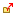
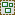
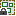

- 操作。
選択しているオブジェクトに対するコマンドメニューです。
マウスの右クリックでも同内容のメニューを表示できます。
- 選択オブジェクトを自動的に表示on/off。
ページウィンドウなどで選択したオブジェクトが、自動的に表示される機能をon/offできます。
※多数のオブジェクトが配置されたページで、オブジェクト管理ウィンドウ上の表示位置を勝手に変更されたくない場合は、offにしてください。
- パラメータ調整アイコン。
オブジェクトのパラメータを調整するアイコンです。
左側の目アイコンで、表示・非表示状態を設定します。
※プレビューやバイナリ出力時には、設定に関わらず、表示されます。
右の錠前アイコンでロック状態を設定します。
- オブジェクトの表示。
オブジェクトをツリー表示しています。
表示の上に位置するオブジェクトほど手前に表示され、
移動させる事で表示の優先順位を変更できます。
- リンクされた画像の状態表示。
オブジェクトにリンクされた画像の状態を示します。
 オブジェクト内にプロジェクトの外からリンクされている画像がある。 オブジェクト内で使用されている画像が見つからない。
| アイコン | 説明 | |||
| 通常 | ロック | 非表示 （通常） |
非表示 （ロック） |
|
|  |  | グループ | ||
| テキストオブジェクト | ||||
| ピクチャオブジェクト | ||||
| フレームオブジェクト | ||||